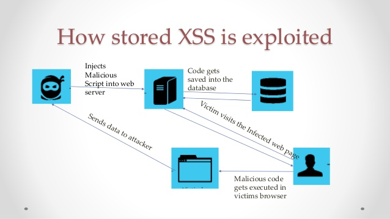
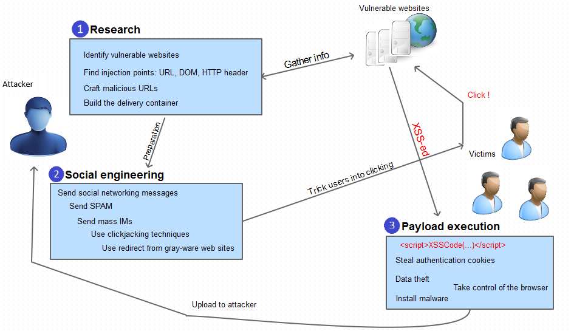

Cross Site Scripting
To start off this won't be a regular blog about Cross Site Scripting (XSS). In this blog I would try to explain the internals of xss and how you might leverage it to get even a more severe vulnerability! If you think you already know what is xss you might even want to stop reading further!
So let's start! What is xss? Cross Site Scripting or xss is a client side attack. It occurs when a input is accepted from the user and is shown as it is without proper cleansing and validations.
Now why does this occur? It occurs mainly because developers try to dynamically generate the HTML code (because the browser only understand HTML, JavaScript and CSS) so in this effort they sometimes forget that a malicious user may input something which when used as it is might manipulate the code so as to change the HTML interpretation for the victims browser and may inject malicious JavaScript!
As code speaks louder than words let's take an example!
<?php
echo 'Hello ' . $_GET["name"] . '!';
?>
Assuming the user entered http://example.com/?name=Hannes <script>alert(1)</script>
This would inject the attacker controlled javascript which would perform the action of alerting. The html would look something like this:
Hello Hannes! <script>alert(1)</script>
As you can see the script tag is injected there which in place can inject javascript!
As you can see in the above example how a malicious user can break the HTML generation code written by the developer.
So one might wonder what harm can an alert box do and that too when a user is inputting the things themselves!
But that's not true. Let's see the worst case scenarios of xss in order of their severity:
- Low severity
- - an xss which only affects the attacker
- - which happens because of malicious attachments
- - which can't access victim's cookie
- - which require lot of if's with the victims interaction
- - only theory based
- Medium severity
- - any xss which has full control over victims JavaScript. Meaning which can manipulate victims cookies to manipulate the browser.
- High severity
- - privilege escalation like normal user can affect the admin and become an admin
- - rce maybe? (Depends on the application used)
Now let's see some of the important things related to xss which I see most of the blogs forget to mention:
- Cookies: cookies are small pieces of information stored in browser by a website to mainly tell apart various users without having to make them log in again and again or in simple words to maintain sessions.
The main thing which JavaScript can manipulate is cookies. So it can basically clone the victims session and can result in account take over of the victim. - httponly: this flag when set on the cookie restricts the client side JavaScript to manipulate it
There are three major types of XSS attacks:
- Persistent XSS: where the malicious input is stored in a database permanently or the attacker finds a way such that attacker controlled JavaScript file is included by the victims website and is therefore executed by the websites user.
 - Reflected XSS: where the user is sent some links which when clicked triggers an xss
 - DOM-based XSS: where the javascript code is manipulated to inject attackers xss code.

Some of the innovative type of XSS I have come across including chaining and to increase the severity!
- One of the scenario of xss I came across when the Content Type: text/html is used to pass json data. You can check the writeup about it here.
- Another case is attacker can steal the victims cookies and send it to attacker controlled site!
- Attacker can manipulate the document object model and can possibly lead to virtual defacement
- Can possibly fill or send forms on the behalf of the victim!
Ok so that's it for now. I would like to mention Security Idiots who have some really nice blogs to study xss in depth.